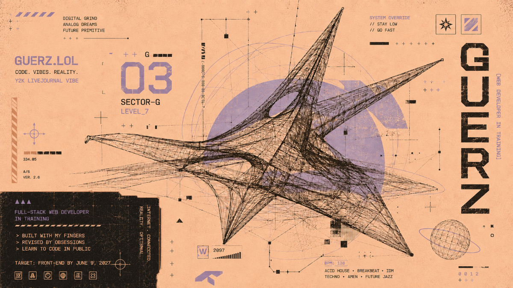

THE WEB DEV ROADMAP v3
less fog, more forward
MY FOCUS:
six freeCodeCamp Certifications in order; each one it's own module.a module opens when the one preceding it becomes deservedly earned once fully learned.
unlike previous iterations of my roadmap, i did away with a weekly scheduled format. the one you see below grants myself the time necessary to fully digest the material. some things take longer than a week. that's not falling behind; that's awareness of one's of limits. remember, humility is a virtue.
MY GOALS:
- June 9, 2027 — Front-End Developer
- December 2028 — Web Development B.S. Full Sail University
- June 9, 202? — Full-Stack Developer
1 · responsive web design
2 · javascript
3 · front end libraries
4 · python
5 · backend + apis
6 · data visualization
you are here — responsive web design review
STUDY: Responsive Web Design curriculum review
METHOD: systemmatic wall of taped index cards, enhanced with my highlighter format
SUPPORT: Kuliko AI index cards and generated quizzes • reviewing weak areas with Coach Gee (ChatGPT)
CHECKPOINT: claim the freeCodeCamp Responsive Web Design v9 Certification
module 1 — responsive web design · html / css foundations
the spine
fCC Responsive Web Design v9 cert. build-it-cold sequence:
semantic HTML & forms → box model → flexbox → typography, positioning & attribute selectors → responsive design & variables → grid → animations.
every build shipped to guerz.lol's FCC Build Archive — rebuild-and-comment method, every line explained or it doesn't count.
semantic HTML & forms → box model → flexbox → typography, positioning & attribute selectors → responsive design & variables → grid → animations.
every build shipped to guerz.lol's FCC Build Archive — rebuild-and-comment method, every line explained or it doesn't count.
module 2 — javascript · a real lane, not just glue
the spine
fCC JavaScript Algorithms & Data Structures cert. git + github from the terminal for all real work, from day one of this module. build-it-cold shifts to JS: variables → arrays/objects/loops → DOM + events → fetch/JSON + async. opens once module 1's cert is claimed — no earlier.
module 3 — front end development libraries · react / redux
the spine
fCC Front End Development Libraries cert — React, Redux, Sass. at least one real component-driven project shipped to guerz.lol. opens once module 2's cert is claimed.
module 4 — scientific computing with python · the back half begins
the spine
fCC Scientific Computing with Python cert. python fundamentals feeding straight into AI/LLM work — CLI tools, files/CSV/JSON, APIs from python, then Anthropic/OpenAI calls and local models via Ollama on the M4. opens once module 3's cert is claimed.
module 5 — back end development & apis
the spine
fCC Back End Development & APIs cert. a real API-backed project — routes, data, error handling. Flask stays the python-side option once python's in hand. opens once module 4's cert is claimed.
module 6 — data visualization · the last cert on the spine
the spine
fCC Data Visualization cert — D3, data-driven DOM. a real data-viz project pulling from an API, live on guerz.lol. earning this one = full stack developer. goal line: june 9, 202?. opens once module 5's cert is claimed.
modules stay intentionally open — direction, not gospel. firms up at monthly reassessments. the cs/algorithms/data-structures lane is reserved (python-flavored) but doesn't start until 1–2 real python/ai projects exist. grind justified by use, not syllabus guilt. (+ any later certs deliberately added only at a real boundary, never for elegance.)
parallel sidequest — wordpress proficiency · the ultimate weapon
foundations
publishing. block editor fluency, theme basics, skeleton posts in my style. 1–2 real posts a week.
structure
integration. pages vs posts, categories/tags, menus, site editor. cross-post pipeline to bluesky + mastodon.
workflows
blog.guerz.lol. obsidian → wordpress → social pipeline. income-gated migration to a self-hosted blog.
minimum heartbeat: one wordpress interaction per week. never allowed to hijack the main spine.
rules · read these when overwhelmed
one main thing at a time.
ship something visible often, even tiny.
reference sites are support, not a third curriculum.
build first, read second, watch third.
ugly but working > perfect but stuck.
roadmap tracks reality — update it when things move.
the timeline flexes. the direction doesn't.
the certs are the ruler now — six fCC certs, free; front-end by 6.9.27, full stack when it's earned.
no re-sequencing the modules without Coach P sign-off.
monthly reassessment on the 1st.
wordpress sidequest: minimum one interaction/week, never hijacks the spine.
definition of done (per module milestone)
the concrete output exists and is visible, deployed or local.
roadmap.html reflects what actually happened.
at least one obsidian nightly report exists for the stretch.
you can explain what you built in plain english.